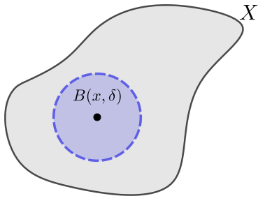
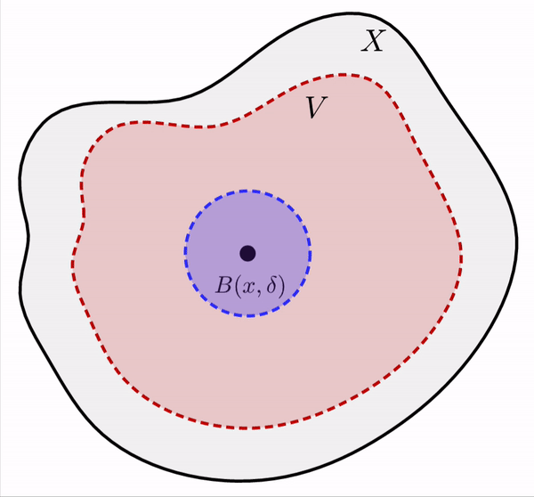
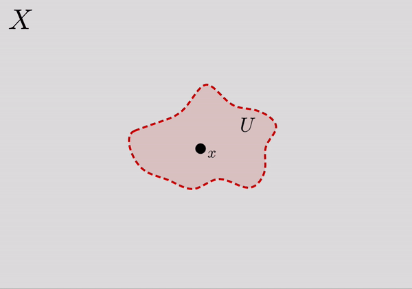

Mathematical Analysis
Summary Week 10
Metric spaces
&
Topology
Metric spaces
Definition: Let $X$ be a set, and let $d \colon X \times X \to \R$ be a function such that for all $x,y,z \in X$
- $d(x,y) \geq 0$. (nonnegativity)
- $d(x,y) = 0$ if and only if $x = y$. (identity of indiscernibles)
- $d(x,y) = d(y,x)$. (symmetry)
- $d(x,z) \leq d(x,y)+ d(y,z)$. (triangle inequality)
The pair $(X,d)$ is called a metric space. The function $d$ is called the metric or the distance function. Sometimes we write just $X$ as the metric space instead of $(X,d)$ if the metric is clear from context.
Metric spaces
Lemma (Cauchy-Schwarz inequality): If $x =(x_1,x_2,\ldots,x_n) \in \R^n$ and $y =(y_1,y_2,\ldots,y_n) \in \R^n$, then \begin{equation*} {\biggl( \sum_{j=1}^n x_j y_j \biggr)}^2 \leq \biggl(\sum_{j=1}^n x_j^2 \biggr) \biggl(\sum_{j=1}^n y_j^2 \biggr) . \end{equation*}
Metric spaces
Theorem: Let $(X,d)$ be a metric space and $Y \subset X$. Then the restriction $d|_{Y \times Y}$ is a metric on $Y$.
Definition: If $(X,d)$ is a metric space, $Y \subset X$, and $d' := d|_{Y \times Y}$, then $(Y,d')$ is said to be a subspace of $(X,d)$.
Definition: Let $(X,d)$ be a metric space. A subset $S \subset X$ is said to be bounded if there exists a $p \in X$ and a $B \in \R$ such that \begin{equation*} d(p,x) \leq B \quad \text{for all } x \in S. \end{equation*} We say $(X,d)$ is bounded if $X$ itself is a bounded subset.
Topology
Open and Closed Balls
|
Definition: Let $(X,d)$ be a metric space, $x \in X$, and $\delta > 0$. Define the open ball, or simply ball, of radius $\delta$ around $x$ as \begin{equation*} B(x,\delta) := \bigl\{ y \in X : d(x,y) \lt \delta \bigr\} . \end{equation*} Define the closed ball as \begin{equation*} C(x,\delta) := \bigl\{ y \in X : d(x,y) \leq \delta \bigr\} . \end{equation*} |

Open ball |
Topology
Open and Closed Sets
|
Definition: Let $(X,d)$ be a metric space. A subset $V \subset X$ is open if for every $x \in V$, there exists a $\delta \gt 0$ such that $B(x,\delta) \subset V$. A subset $E \subset X$ is closed if the complement $E^c = X \setminus E$ is open. When the ambient space $X$ is not clear from context, we say $V$ is open in $X$ and $E$ is closed in $X$. If $x \in V$ and $V$ is open, then we say $V$ is an open neighborhood of $x$ (or sometimes just neighborhood). |

Open neighborhood |
Topology
Open and Closed Sets
Theorem: Suppose $(X,d)$ is a metric space, and $Y \subset X$. Then $U \subset Y$ is open in $Y$ (in the subspace topology), if and only if there exists an open set $V \subset X$ (so open in $X$), such that $V \cap Y = U$.
Theorem: Suppose $(X,d)$ is a metric space, $V \subset X$ is open, and $E \subset X$ is closed.
- $U \subset V$ is open in the subspace topology if and only if $U$ is open in $X$.
- $F \subset E$ is closed in the subspace topology if and only if $F$ is closed in $X$.
Sequences and convergence
Definition: A sequence in a metric space $(X,d)$ is a function $x \colon \N \to X$. As before we write $x_n$ for the $n$th element in the sequence and use the notation $\{ x_n \}$, or more precisely \begin{equation*} \{ x_n \}_{n=1}^\infty . \end{equation*}
A sequence $\{ x_n \}$ is bounded if there exists a point $p \in X$ and $B \in \R$ such that \begin{equation*} d(p,x_n) \leq B \qquad \text{for all } n \in \N. \end{equation*} In other words, the sequence $\{x_n\}$ is bounded whenever the set $\{ x_n : n \in \N \}$ is bounded.
Sequences and convergence
Definition: A sequence $\{ x_n \}$ in a metric space $(X,d)$ is said to converge to a point $p \in X$ if for every $\epsilon \gt 0$, there exists an $M \in \N$ such that $d(x_n,p) \lt \epsilon$ for all $n \geq M$. The point $p$ is said to be the limit of $\{ x_n \}$. We write \begin{equation*} \lim_{n\to \infty} x_n := p . \end{equation*}
A sequence that converges is convergent. Otherwise, the sequence is divergent.
Note: Compare this with the definition of convergence in $\R$
Sequences and convergence
Theorem: A convergent sequence in a metric space has a unique limit.
Theorem: A convergent sequence in a metric space is bounded.
Theorem: Let $\{ x_j \}_{j=1}^\infty$ be a sequence in $\R^n$, where we write $x_j = \bigl(x_{j,1},x_{j,2},\ldots,x_{j,n}\bigr) \in \R^n$. Then $\{ x_j \}_{j=1}^\infty$ converges if and only if $\{ x_{j,k} \}_{j=1}^\infty$ converges for every $k=1,2,\ldots,n$, in which case \begin{equation*} \lim_{j\to\infty} x_j = \Bigl( \lim_{j\to\infty} x_{j,1}, \lim_{j\to\infty} x_{j,2}, \ldots, \lim_{j\to\infty} x_{j,n} \Bigr) . \end{equation*}
Sequences and convergence
|
Theorem: Let $(X,d)$ be a metric space and $\{x_n\}$ a sequence in $X$. Then $\{ x_n \}$ converges to $x \in X$ if and only if for every open neighborhood $U$ of $x$, there exists an $M \in \N$ such that for all $n \geq M$, we have $x_n \in U$. Theorem: Let $(X,d)$ be a metric space, $E \subset X$ a closed set, and $\{ x_n \}$ a sequence in $E$ that converges to some $x \in X$. Then $x \in E$. |

Convergent sequence |
Continuous functions
Continuity in metric spaces
Definition: Let $(X,d_X)$ and $(Y,d_Y)$ be metric spaces and $c \in X$. Then $f \colon X \to Y$ is continuous at $c$ if for every $\epsilon \gt 0$ there is a $\delta \gt 0$ such that whenever $x \in X$ and $d_X(x,c) \lt \delta$, then $d_Y\bigl(f(x),f(c)\bigr) \lt \epsilon$.
When $f \colon X \to Y$ is continuous at all $c \in X$, then we simply say that $f$ is a continuous function.
Note: Compare this with the definition of continuity in $\R$
Continuous functions
Continuity in metric spaces and sequences
Theorem: Let $(X,d_X)$ and $(Y,d_Y)$ be metric spaces. Then $f \colon X \to Y$ is continuous at $c \in X$ if and only if for every sequence $\{ x_n \}$ in $X$ converging to $c$, the sequence $\bigl\{ f(x_n) \bigr\}$ converges to $f(c)$.
Note: Compare this Theorem with its version in $\R$
Continuous functions
Continuity and Topology
Lemma: Let $(X,d_X)$ and $(Y,d_Y)$ be metric spaces. A function $f \colon X \to Y$ is continuous at $c \in X$ if and only if for every open neighborhood $U$ of $f(c)$ in $Y$, the set $f^{-1}(U)$ contains an open neighborhood of $c$ in $X$.
Theorem: Let $(X,d_X)$ and $(Y,d_Y)$ be metric spaces. A function $f \colon X \to Y$ is continuous if and only if for every open $U \subset Y$, $f^{-1}(U)$ is open in $X$.
Continuous functions
Continuity and Topology
For every neighborhood $U$ of $f(c)$, the set $f^{-1}(U)$ contains an open neighborhood $W$ of $c$.
The Essence of Topology
Source: Helicoid transformation
Geometric properties of subsets of metric spaces
will be preserved when
continuous transformations (functions or mappings)
are applied.
The Essence of Topology

Source: A coffee cup and a doughnut
Geometric properties of subsets of metric spaces
will be preserved when
continuous transformations (functions or mappings)
are applied.